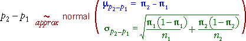

If you don't want to print now,
Two groups of successes and failures
We now consider data that are obtained as random samples from two populations, with the sampled individuals being categorised into successes and failures.
Since our model involves only two parameters, π1 and π2, the two groups are the same only if π2 - π1 = 0. The value of π2 - π1 is usually unknown but can be estimated by p2 - p1. However p2 - p1 is a random quantity so its variability must be taken into account when interpreting its value.
Example

Note that the questions do not refer to the specific 141 births in the study. They ask about differences between winter and summer births 'in general'.
We are interested in π2 - π1 rather than p2 - p1, so we need to understand the accuracy of our point estimate.
Difference between two proportions
Within each group, the sample proportion of successes, p, has a distribution that is approximately normal in large samples and has mean and standard deviation

Applying the general results about the difference between two independent random quantities:

Since the individual proportions are approximately normal (in large samples), their difference is also approximately normal:

Standard error of p2 - p1
The standard deviation of p2 - p1 is also its standard error when it is used to estimate π2 - π1,

In practice, π1 and π2 must be replaced by their sample equivalents to estimate the standard error.

Confidence interval for difference
Most 95% confidence intervals are of the form
estimate ± 1.96 × se(estimate)
perhaps with a refinement of using a slightly higher value than 1.96 (e.g. a t-value) if the standard error is estimated. Applying this to our estimate of π2 - π1and using 2 instead of 1.96 gives the approximate 95% confidence interval

Example

Two-tailed test
H0 : π1 = π2
HA : π1 ≠ π2
For this test, the steps involved in obtaining a p-value are:

The p-value is interpreted in the same way as for all previous tests. A p-value close to zero is unlikely when H0 is true, but is more likely when HA holds. Small p-values therefore provide evidence of a difference between the population probabilities.
One-tailed test
In a 1-tailed test, the alternative hypothesis is
HA : π1 − π2 > 0 or HA : π1 − π2 < 0
The test statistic is identical to that for a 2-tailed test and the p-value is obtained in a similar way, but it is found from only a single tail of the standard normal distribution.
Alternative test statistic
Since π1 and π2 are equal if H0 is true, the overall proportion of successes, p, can be used in the formula for the standard error of p2 - p1.

This refinement makes little difference in practice, so the examples below use the 'simpler' formula that we gave earlier.
Two-tailed example

One-tailed example

Assessing independence from a sample
Independence is an important concept, but it is defined in terms of the joint population probabilites and in most practical situations these are unknown. We must assess independence from a sample of individuals — a contingency table.
Example
The contingency table below categorises a sample of 214 individuals by gender and some other characteristic (possibly weight group or grade in a test).
| Male | Female | Total | |
|---|---|---|---|
| A | 20 | 60 | 80 |
| B | 9 | 84 | 93 |
| C | 2 | 39 | 41 |
| Total | 31 | 183 | 214 |
Is this consistent with a model of independence of the characteristic and gender? (Are the probabilities of A, B and C grades the same for males and females?)
Estimated cell counts under independence
To assess independence, we first find the pattern of cell counts that is most consistent with independence in a contingency table with the observed marginal totals.
| Male | Female | Total | |
|---|---|---|---|
| A | ? | ? | 80 |
| B | ? | ? | 93 |
| C | ? | ? | 41 |
| Total | 31 | 183 | 214 |
The pattern that is most consistent with independence has the following estimated cell counts:

where n denotes the total for the whole table and nx and ny denote the marginal totals for row x and column y.
Applying this to our example gives the following table:
| Male | Female | Total | |
|---|---|---|---|
| A |  |
80 | |
| B | 93 | ||
| C | 41 | ||
| Total | 31 | 183 | 214 |
Comparison of observed and estimated cell counts
We test for independence with the hypotheses:
H0 : X and Y are independent
HA : X and Y are dependent
The test asks whether the observed and estimated cell counts are 'sufficiently close' — are the observed counts consistent with the counts estimated under independence?
| Male | Female | Total | |
|---|---|---|---|
| A | 20 (11.59) |
60 (68.41) |
80 |
| B | 9 (13.47) |
84 (79.53) |
93 |
| C | 2 (5.94) |
39 (35.06) |
41 |
| Total | 31 | 183 | 214 |
Possible test statistic?
A simple summary of how close the observed counts, nxy, are to the estimated cell counts, exy, is the sum of the squared differences,

Unfortunately this would be a bad test statistic — its distribution depends not only on the numbers of rows and columns in the table, but also on the number of individuals classified — the overall total for the table. A better test statistic is presented in the next page.
A better test statistic
The following χ2 (pronounced chi-squared) statistic has much better properties than the raw sum of squares on the previous page

Its distribution only depends on the number of rows and columns in the contingency table.
Distribution of chi-squared statistic
When there is independence, the χ2 statistic for a contingency table with r rows and c columns has approximately a standard distribution called a chi-squared distribution with (r - 1)(c - 1) degrees of freedom.
The mean of a chi-squared distribution equals its degrees of freedom and it is skew. Some examples are given below for contingency tables of different sizes:

Testing for independence
H0 : X and Y are independent
HA : X and Y are dependent
The following test statistic is used:

P-value

The p-values is interpreted in the same way as for other hypothesis tests — it describes the strength of evidence against the null hypothesis:
| p-value | Interpretation |
|---|---|
| over 0.1 | no evidence against the null hypothesis (independence) |
| between 0.05 and 0.1 | very weak evidence of dependence between the row and column variables |
| between 0.01 and 0.05 | moderately strong evidence of dependence between the row and column variables |
| under 0.01 | strong evidence of dependence between the row and column variables |
Warning about low estimated cell counts
The χ2 test statistic has only approximately a chi-squared distribution. The p-value found from it can be relied on if:
If the cell counts are small enought that these conditions do not hold, the p-value is less reliable. (But advanced statistical methods are required to do better!)
Examples


Contingency tables and groups
Contingency tables can either arise from bivariate categorical data or from univariate categorical data that is recorded separately from several groups.
The chi-squared test assesses independence in bivariate data. The same test can also be used to compare the different groups if there is grouped data.
Example